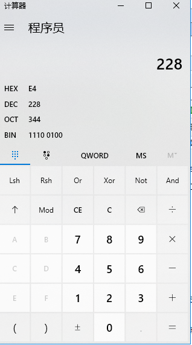

5.3.5 和二进制极为密切的运算符
本小节的运算符需要借助二进制概念来理解。
二进制数据中，比如一个字节的数据，它的十进制为228，二进制就为11100100，如图5.11，
注意：如果不懂怎么转换十进制和二进制，可以借用windows的计算器来辅助。

图5.11 228的十进制和二进制表现
把 11100100 整体往右边挪动一位，就会变为01110010。如果觉得不好理解？请这么想，有一条火车轨道，轨道只有八节，一列无限长的火车在这八节轨道上来回移动，如图5.12所示，
图5.12 想象出的场景1
火车启动前，在轨道上对应的车厢上标有一串数字 11100100，没有对应的车厢统一设数字为0，如图5.13，
图5.13 想象出来的场景2
当火车往右移动一格的时候，在轨道上车厢显示的数据就为 01110010，当火车往右移动两格的时候，轨道上车厢显示的数据就为00111001。
以上就是数据右移的表现，同理，数据左移就好比刚才那列火车向左移动，总之八节轨道上的车厢只能显示8个数字。
再看看十进制的228，二进制为11100100，右移一位变为01110010，十进制值为114，在C语言中有移位运算符 >> 和 << 专门用来让数据移位，如下代码，
#include <stdio.h>
void main()
{
unsigned char a = 228;
unsigned char b = 0;
b = a >> 1;
printf("b = %d\n", b);
}运行结果是：b = 114。
注意：C语言printf不能显示二进制数据，只能显示十进制，十六进制和八进制的数。
>> 就是右移运算符， << 就是左移运算符。
读者可以把上述代码的 >> 改为 << ，向左移动一位就会使得 11100100 变为 11001000 ，十进制的值就为200。如果移动2位结果又是怎样呢，读者可以自行脑补。
上述案例用的是 unsigned char 无符号的字符型数据，它的取值范围是 0~255，所以不管怎么移动，这个数据都是在 0~255 范围内。如果数据是unsigned int 类型，那么这列火车的轨道就要加长到32节，数据就会在 0~4294967295 之内浮动。
难点来了，如果类型是带负号的 char 型呢？首先它的范围只可以在 -128~127 之间，那就随机选一个数来研究，比如选124，同样是刚才那份代码，将unsigned除去，将 a = 228 改成 a = 124。
a右移一位运行结果：b = 62，a 左移一位运行结果： b = -8 。这些都与计算机存储数据方式有关，八个字节中，第一位是符号位，如果是0表示符号为正，如果是1表示符号为负，因为笔者写文章动力不足，所以笔者打算不讨论这块，希望读者自行去了解这块知识，可以借助windows的计算机结合写代码来分析有符号的数据移位规律是怎样的。
下一个讲位运算，&， | ， ^，~
按位与运算&，看起来很熟悉吧，感觉就是取地址符号一样，在运算表达式中它的作用是将左边的数据与右边的数据进行与的运算，与运算就是把每个对应的位进行比对，如果都为1这个位就设置为1，如果不相等或者都为0这个位就设置为0，如图5.14，
图5.14 与运算案例
取二进制数 01011011 同 10011001 进行与运算，结果为 00011101，与运算规则正是遵循了同位都为1取1，其它情况取0，代码如下：
#include <stdio.h>
void main()
{
unsigned char a = 91;
unsigned char b = 153;
unsigned char c = 0;
c = a & b;
printf("c = %d\n", c);
}运行结果：c = 25，十进制数25，它的二进制恰好就为图5.14所运算的结果为 00011001。
同理，按位或运算 | ，就是左边和右边两个数的每一位进行比对，如果有一个位是1就取1，其它取0。
异或运算 ^ ，左边和右边两个数的每一位进行对比，如果相同取0，不同取1。
非运算 ~ ，上面三个运算有左边的数和右边的数，非运算只针对一个数进行运算，就是将这个数的每一位都取反，也就是如果是0就取1，如果是1就取0。
最后讲解比较常用的逻辑运算符 &&， ||， !
逻辑与 && ，返回的是bool值，也就是返回true或者false，用法如下代码：
#include <stdio.h>
#include <stdbool.h>
void main()
{
int a = 10;
int b = 5;
int c = 20;
int d = 15;
bool e = false;
e = ((a > b)&&(c > d));
printf("e = %d\n", e);
} 运行结果：e = 1。
逻辑与 && 是用来连接表达式，表达式的结果是bool 值，好比上述例子，a > b 是true，c > d 是true，所以 true && true 的结果是true，得到 c 的值就为1。读者可以自行修改，比如把 a > b 改为 a < b 得到的 c 是 false && true ，结果是false。所以逻辑与 && 只有三种可能两种结果（不是true就是false）：true && true 为 true，true && false 为 false， false && false 为 false。
同理，逻辑或 || ，true || true 为 true，true || false 为 true，false || false 为 false。
逻辑非 !，加在表达式前，如果数值为0，结果为1；如果数值不为0，结果为0。可以参考以下代码，
#include <stdio.h>
#include <stdbool.h>
void main()
{
int a = 100;
int b = 0;
int c = -10;
int d = 1000;
d = !a;
printf("d = %d\n", d);
d = !b;
printf("d = %d\n", d);
d = !c;
printf("d = %d\n", d);
} 运行后，d的值分别为：0,1,0。
最后的最后讲解一个非主流的运算符 sizeof 。
C语言学到后期，一般都会误认为 sizeof 是个C库的函数，其实它是个运算符，用于计算变量或者字符串占用内存的字节数，代码如下：
#include <stdio.h>
#include <stdbool.h>
void main()
{
int a = 100000;
char b = 42;
float c = 3.1415;
bool d = false;
int result = -1;
result = sizeof(a);
printf("result = %d\n", result);
result = sizeof(b);
printf("result = %d\n", result);
result = sizeof(c);
printf("result = %d\n", result);
result = sizeof(d);
printf("result = %d\n", result);
} 运行结果 result 的值依次为：4,1,4,1。这个结果刚好就是一个整型int占用字节数4，一个char占用字节数1，一个float占用字节数4，一个bool占用字节数1。
5.4 变量命名法
本节最后讲解两种变量的命名方式，之前变量命名由于代码比较短小，很容易就能理解代码的意思，所以随便用个a或者b就凑合着用了，但是如果要用C语言做个大一点的项目，也就是当代码量很大的时候，变量名就需要人性化一些，便于多人一起维护项目，就像学生写作文一样，评卷老师看到字写得好看，不管内容如何，先给50分。
5.4.1 匈牙利命名法
参考链接：
https://baike.baidu.com/item/%E5%8C%88%E7%89%99%E5%88%A9%E5%91%BD%E5%90%8D%E6%B3%95/7632397?fr=aladdin
比如我要给的年龄的变量命名，首先采用的是 int 类型，在匈牙利命名规则中，整型一般用 i 或者 n ，所以这么声明变量:
int nAge;
5.4.2 其它命名法
笔者在 linux 驱动代码中选取了一个比较有代表性的变量命名：
注意：linux 驱动代码几乎都是用C语言完成的，驱动是用来驱动设备的，C语言在这方面有它的优越性，比如位运算，指针操作等等。
int input_devices_state;一看就能明白这个变量的意义，表示输入设备的状态。
bool mutex_acquired;这个是互斥锁请求，不明白单词的意思可以用翻译软件。
int retval = 0;ret 意思为 return ，val 意思为 value，组合起来 retval 就是返回值的意思，后续学函数就能明白返回值的作用了。
本章终于完结！下一章节讲解的是控制语句，能用C语言做的事情多起来了！